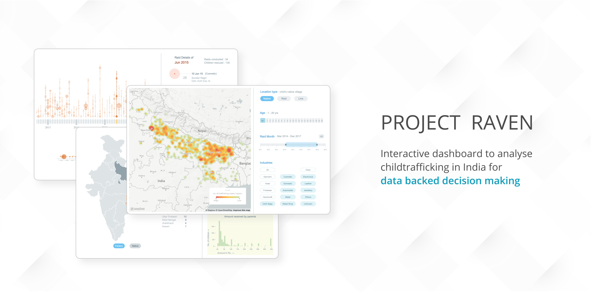

Project Raven
Visualisation of Child Trafficking in India

Check out the live site at https://pbshgthm.github.io/Raven/
The whole project is under NDA, hence here certain aspects are removed from the visualisation.
Building an Interactive Dashboard to be used by Kailash Satyarthi Children’s Foundation.
Child trafficking in India is still a prevalent problem. How can Data help solve it ?
In India, it is estimated that there are around 135,000 children trafficked each year.
Kailash Satyarthi Children’s foundation has been at the fore front of Child rights movement in India. They have successfully conducted a lot of raids, across India with the help of Police department and have rescued thousands of kids over the past decade. During such raids, they were able to aggregate a lot of data regarding the kids, their background, working conditions and more. This resulted in a database of over 20,000 children and 30+ data points each.